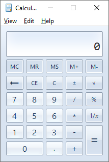
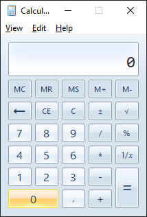

Увод¶
До сада си научио много о програмирању, али су све апликације које си креирао биле у текстуалном режиму тј. извршавале су се у командној линији или конзоли оперативног система, на пример у Command Prompt-у или PowerShell-у. Каже се да те апликације имају текстуални кориснички интерфејс, односно интерфејс командне линије (енгл. Command Line Interface - CLI). У кругу ИТ професионалаца CLI апликације се и даље свакодневно користе и представљају незаменљиве алате за систем администраторе и програмера. Међутим, просечан корисник рачунара вероватно никада неће задавати текстуалне команде оперативном систему, нити користити апликације у командној линији.
Пре четрдесете година, 1984. године, појавио се Macintosh, први масовно комерцијално доступан рачунар са графичким корисничким интерфејсом (енгл. Graphical User Interface - GUI), а годину дана касније представљен је и оперативни систем Windows за персоналне рачунаре. Ови догађаји променили су начин на који корисници користе рачунаре. Задавање команди и унос података искључиво тастатуром замењен је радом са визуелним елементима попут икона, прозора, менија, дугмади и других контрола. Тако је миш, поред тастатуре, постао основни улазни уређај за персоналне рачунаре.
Временом се графички кориснички интерфејс мењао и представљани су разни показивачки уређаји попут трекбола (енгл. Trackball), тачпеда (енгл. Touchpad), стилуса (енгл. Stylus) и графичких табли за цртање (енгл. Graphics Drawing Tablet). Значајан корак у развоју графичких корисничких интерфејса била је и појава екрана на додир (енгл. Touchscreen) на мобилним уређајима. Поред свих иновација, улепшаног дизајна, анимација и других ефеката, принцип рада у графичком корисничком окружењу остао је исти. Апликације се извршавају у прозорима. У прозорима се налазе одређене контроле попут дугмади, оквира за унос текста, менија итд. Интеракцијом корисника са контролама региструју се догађаји у оперативном систему, на пример догађај клика миша на дугме или догађај одабира ставке у менију.
Твој задатак биће:
да дефинишеш својства контрола (да дизајнираш GUI) и
да дефинишеш догађаје контрола (да развијаш GUI, односно програмираш функционалност апликације).
Погледај изглед неке једноставне Windows апликације, на пример Калкулатора:

У насловној линији прозора налази се икона и назив, испод ње налази се мени,
испод њега простор за приказ бројева, па испод њега група дугмади. Ово би био
први део задатка приликом израде GUI апликација који подразумева дефинисање
својстава контрола. На пример, контрола у доњем левом углу је дугме, на којем
је исписан текст 0. За то дугме дефинисана је његова ширина, висина и
координате, његова боја, фонт којим је исписан текст итд. Иако ти све ово
изгледа једноставно у односу на класично програмирање, дизајн корисничког
интерфејса и корисничког искуства (енгл. UI/UX Design) је важна област у
процесу развоја апликације. Постоје случајеви да добро дизајниране апликације
са лошом функционалношћу има више корисника него лоше дизајнирана апликација са
одличном функционалношћу.
Након постављања контрола и дефинисања њигових својстава, следи други део
задатка - дефинисање догађаја, тј. програмирање функционалности апликације. На
пример, ако у апликацији Калкулатор поставиш показивач мише преко дугмета 0
промениће се његова боја, што представља догађај постављања показивача миша
преко контроле:

Ако кликнеш на дугме 0, док се у простору за приказ бројева налази 0, неће
се десити ништа. Ако кликнеш на дугме 0, а у простору за приказ бројева
постоји макар једна унета цифра различита од нуле, онда ће се дописати једна
нула, што представља догађај клика миша на контролу. Ако кликнеш десним
тастером миша на дугме 0 неће се десити ништа, што значи да није дефинисан
догађај десног клика миша на контролу итд.
Пре него што почнеш са развојен GUI апликација, неопходно је да у развојном окружењу креираш адекватно решење и у оквиру њега нови пројекат, слично као што си то радио за CLI апликације. Када креираш нови пројекат, и први и други део задатка моћићеш да решаваш на више начина, што ће бити тема у наредним лекцијама.